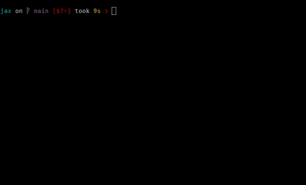

Introduction to debugging#
Do you have exploding gradients? Are NaNs making you gnash your teeth? Just want
to poke around the intermediate values in your computation? This section
introduces you to a set of built-in JAX debugging methods —
jax.debug.print(), jax.debug.breakpoint(), and
jax.debug.callback() — that you can use with various JAX transformations.
Summary: Use jax.debug.print() to print values to stdout in jax.jit-,jax.pmap-, and pjit-decorated functions,
and jax.debug.breakpoint() to pause execution of your compiled function to inspect values in the call stack.
Let’s begin with jax.debug.print().
jax.debug.print for simple inspection#
Here is a rule of thumb:
Use
jax.debug.print()for traced (dynamic) array values withjax.jit(),jax.vmap()and others.Use Python
print()for static values, such as dtypes and array shapes.
Recall from Just-in-time compilation that when transforming a function with jax.jit(),
the Python code is executed with abstract tracers in place of your arrays. Because of this,
the Python print() function will only print this tracer value:
import jax
import jax.numpy as jnp
@jax.jit
def f(x):
print("print(x) ->", x)
y = jnp.sin(x)
print("print(y) ->", y)
return y
result = f(2.)
print(x) -> JitTracer<~float32[]>
print(y) -> JitTracer<~float32[]>
Python’s print executes at trace-time, before the runtime values exist.
If you want to print the actual runtime values, you can use jax.debug.print():
@jax.jit
def f(x):
jax.debug.print("jax.debug.print(x) -> {x}", x=x)
y = jnp.sin(x)
jax.debug.print("jax.debug.print(y) -> {y}", y=y)
return y
result = f(2.)
jax.debug.print(x) -> 2.0
jax.debug.print(y) -> 0.9092974066734314
Similarly, within jax.vmap(), using Python’s print will only print the tracer;
to print the values being mapped over, use jax.debug.print():
def f(x):
jax.debug.print("jax.debug.print(x) -> {}", x)
y = jnp.sin(x)
jax.debug.print("jax.debug.print(y) -> {}", y)
return y
xs = jnp.arange(3.)
result = jax.vmap(f)(xs)
jax.debug.print(x) -> 0.0
jax.debug.print(x) -> 1.0
jax.debug.print(x) -> 2.0
jax.debug.print(y) -> 0.0
jax.debug.print(y) -> 0.8414709568023682
jax.debug.print(y) -> 0.9092974066734314
Here’s the result with jax.lax.map(), which is a sequential map rather than a
vectorization:
result = jax.lax.map(f, xs)
jax.debug.print(y) -> 0.0
jax.debug.print(x) -> 0.0
jax.debug.print(y) -> 0.8414709568023682
jax.debug.print(x) -> 1.0
jax.debug.print(y) -> 0.9092974066734314
jax.debug.print(x) -> 2.0
Notice the order is different, as jax.vmap() and jax.lax.map() compute the same results in different ways. When debugging, the evaluation order details are exactly what you may need to inspect.
Below is an example with jax.grad(), where jax.debug.print() only prints the forward pass. In this case, the behavior is similar to Python’s print(), but it’s consistent if you apply jax.jit() during the call.
def f(x):
jax.debug.print("jax.debug.print(x) -> {}", x)
return x ** 2
result = jax.grad(f)(1.)
jax.debug.print(x) -> 1.0
Sometimes, when the arguments don’t depend on one another, calls to jax.debug.print() may print them in a different order when staged out with a JAX transformation. If you need the original order, such as x: ... first and then y: ... second, add the ordered=True parameter.
For example:
@jax.jit
def f(x, y):
jax.debug.print("jax.debug.print(x) -> {}", x, ordered=True)
jax.debug.print("jax.debug.print(y) -> {}", y, ordered=True)
return x + y
f(1, 2)
jax.debug.print(x) -> 1
jax.debug.print(y) -> 2
Array(3, dtype=int32, weak_type=True)
To learn more about jax.debug.print() and its Sharp Bits, refer to Advanced debugging.
jax.debug.breakpoint for pdb-like debugging#
Summary: Use jax.debug.breakpoint() to pause the execution of your JAX program to inspect values.
To pause your compiled JAX program during certain points during debugging, you can use jax.debug.breakpoint(). The prompt is similar to Python pdb, and it allows you to inspect the values in the call stack. In fact, jax.debug.breakpoint() is an application of jax.debug.callback() that captures information about the call stack.
To print all available commands during a breakpoint debugging session, use the help command. (Full debugger commands, the Sharp Bits, its strengths and limitations are covered in Advanced debugging.)
Here is an example of what a debugger session might look like:
@jax.jit
def f(x):
y, z = jnp.sin(x), jnp.cos(x)
jax.debug.breakpoint()
return y * z
f(2.) # ==> Pauses during execution

For value-dependent breakpointing, you can use runtime conditionals like jax.lax.cond():
def breakpoint_if_nonfinite(x):
is_finite = jnp.isfinite(x).all()
def true_fn(x):
pass
def false_fn(x):
jax.debug.breakpoint()
jax.lax.cond(is_finite, true_fn, false_fn, x)
@jax.jit
def f(x, y):
z = x / y
breakpoint_if_nonfinite(z)
return z
f(2., 1.) # ==> No breakpoint
Array(2., dtype=float32, weak_type=True)
f(2., 0.) # ==> Pauses during execution
jax.debug.callback for more control during debugging#
Both jax.debug.print() and jax.debug.breakpoint() are implemented using
the more flexible jax.debug.callback(), which gives greater control over the
host-side logic executed via a Python callback.
It is compatible with jax.jit(), jax.vmap(), jax.grad() and other
transformations (refer to the Flavors of callback table in
External callbacks for more information).
For example:
import logging
def log_value(x):
logging.warning(f'Logged value: {x}')
@jax.jit
def f(x):
jax.debug.callback(log_value, x)
return x
f(1.0);
WARNING:root:Logged value: 1.0
This callback is compatible with other transformations, including jax.vmap() and jax.grad():
x = jnp.arange(5.0)
jax.vmap(f)(x);
WARNING:root:Logged value: 0.0
WARNING:root:Logged value: 1.0
WARNING:root:Logged value: 2.0
WARNING:root:Logged value: 3.0
WARNING:root:Logged value: 4.0
jax.grad(f)(1.0);
WARNING:root:Logged value: 1.0
This can make jax.debug.callback() useful for general-purpose debugging.
You can learn more about jax.debug.callback() and other kinds of JAX callbacks in External callbacks.
Read more in Compiled prints and breakpoints.
Functional error checks with jax.experimental.checkify#
Summary: Checkify lets you add jit-able runtime error checking (e.g. out of bounds indexing) to your JAX code. Use the checkify.checkify transformation together with the assert-like checkify.check function to add runtime checks to JAX code:
from jax.experimental import checkify
import jax
import jax.numpy as jnp
def f(x, i):
checkify.check(i >= 0, "index needs to be non-negative!")
y = x[i]
z = jnp.sin(y)
return z
jittable_f = checkify.checkify(f)
err, z = jax.jit(jittable_f)(jnp.ones((5,)), -1)
print(err.get())
# >> index needs to be non-negative! (check failed at <...>:6 (f))
You can also use checkify to automatically add common checks:
errors = checkify.user_checks | checkify.index_checks | checkify.float_checks
checked_f = checkify.checkify(f, errors=errors)
err, z = checked_f(jnp.ones((5,)), 100)
err.throw()
# ValueError: out-of-bounds indexing at <..>:7 (f)
err, z = checked_f(jnp.ones((5,)), -1)
err.throw()
# ValueError: index needs to be non-negative! (check failed at <…>:6 (f))
err, z = checked_f(jnp.array([jnp.inf, 1]), 0)
err.throw()
# ValueError: nan generated by primitive sin at <...>:8 (f)
Read more in The checkify transformation.
Throwing Python errors with JAX’s debug flags#
Summary: Enable the jax_debug_nans flag to automatically detect when NaNs are produced in jax.jit-compiled code (but not in jax.pmap or jax.pjit-compiled code) and enable the jax_disable_jit flag to disable JIT-compilation, enabling use of traditional Python debugging tools like print and pdb.
import jax
jax.config.update("jax_debug_nans", True)
def f(x, y):
return x / y
jax.jit(f)(0., 0.) # ==> raises FloatingPointError exception!
Read more in JAX debugging flags.
Next steps#
Check out the Advanced debugging to learn more about debugging in JAX.